中島忠平漆器店さま｜Kickstarter 掲載商品・色展開・英語紹介文・支援プランの一覧です。ご確認のうえ、相違点・ご要望があればお知らせください。
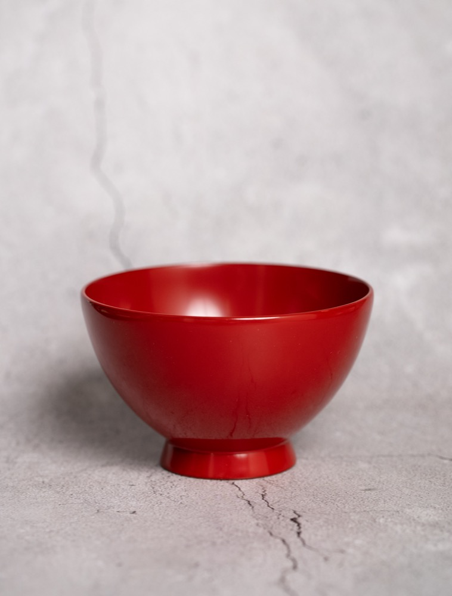
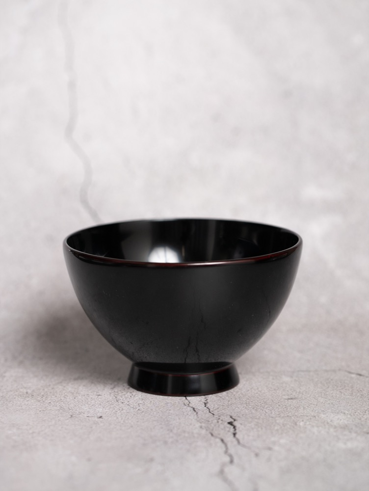
| プラン | 定価 | 割引 | 支援価格（送料別） | 限定数 |
|---|---|---|---|---|
| Early Bird | ¥40,000 | 30%OFF | ¥28,000 | 8 |
| KS Special | ¥40,000 | 20%OFF | ¥32,000 | 12 |
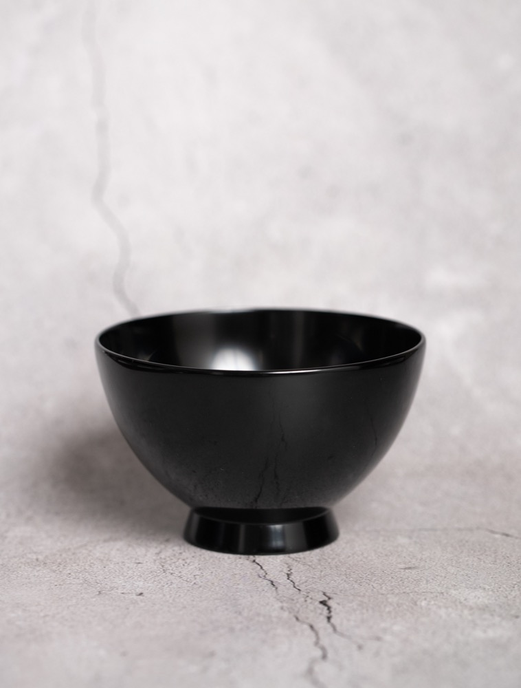
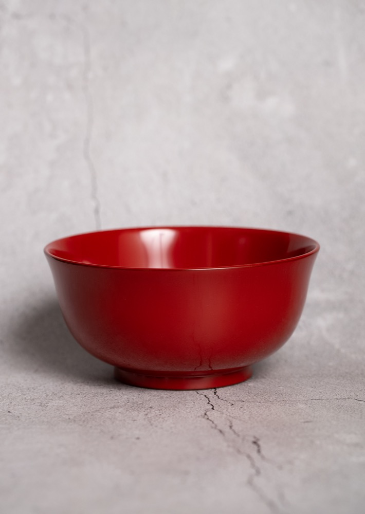
| プラン | 定価 | 割引 | 支援価格（送料別） | 限定数 |
|---|---|---|---|---|
| Early Bird | ¥83,000 | 30%OFF | ¥58,100 | 8 |
| KS Special | ¥83,000 | 20%OFF | ¥66,400 | 12 |
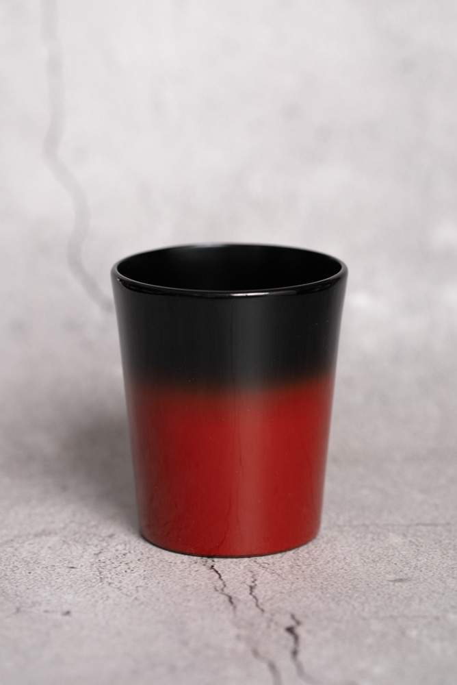
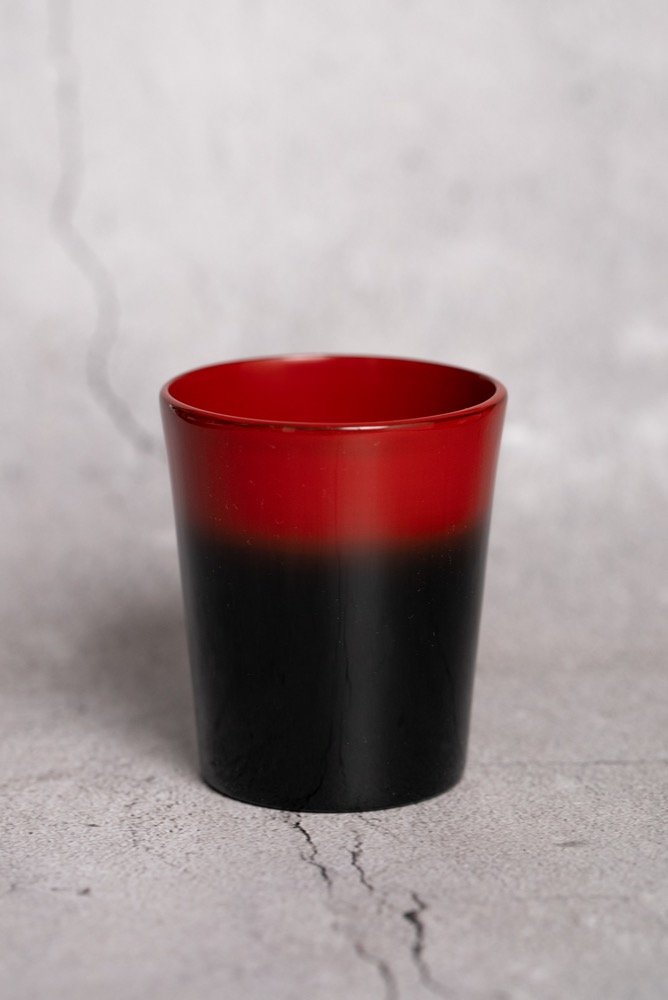
| プラン | 定価 | 割引 | 支援価格（送料別） | 限定数 |
|---|---|---|---|---|
| Early Bird | ¥30,000 | 30%OFF | ¥21,000 | 8 |
| KS Special | ¥30,000 | 20%OFF | ¥24,000 | 12 |
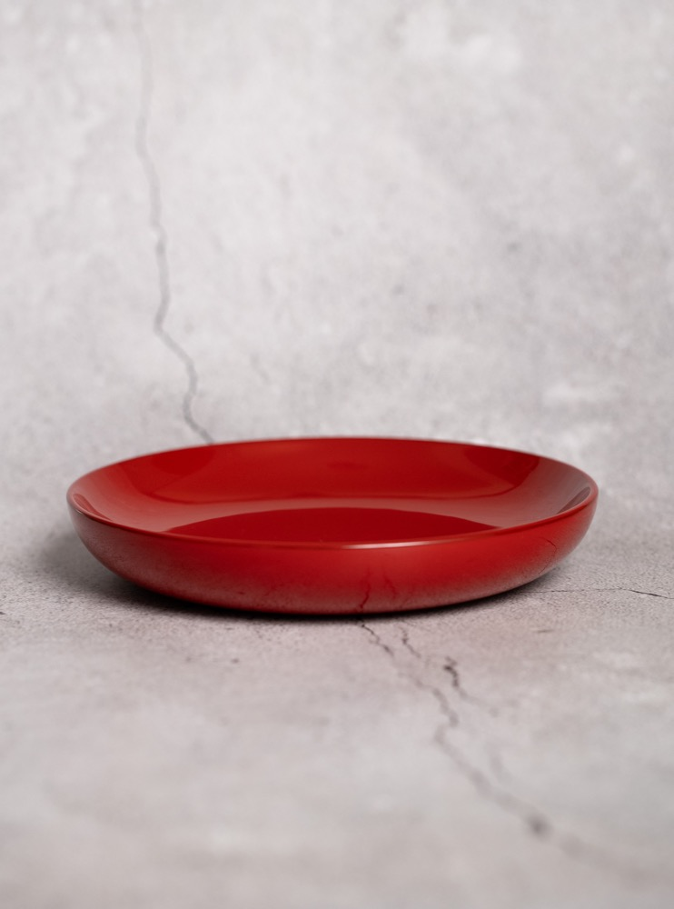
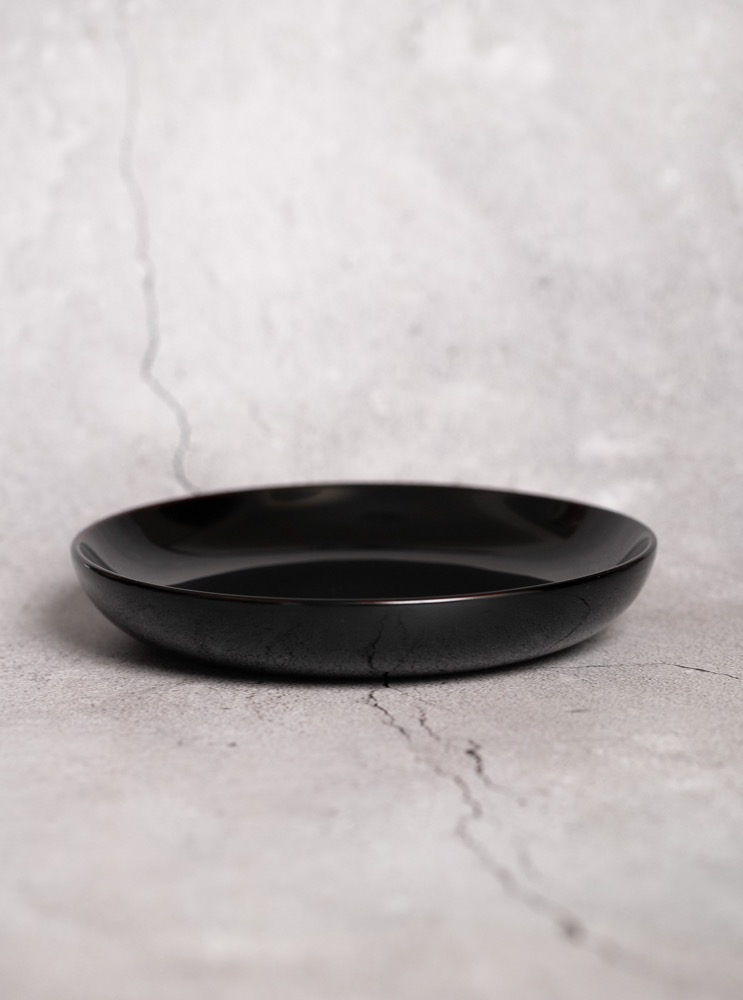
| プラン | 定価 | 割引 | 支援価格（送料別） | 限定数 |
|---|---|---|---|---|
| Early Bird | ¥22,000 | 30%OFF | ¥15,400 | 6 |
| KS Special | ¥22,000 | 20%OFF | ¥17,600 | 8 |
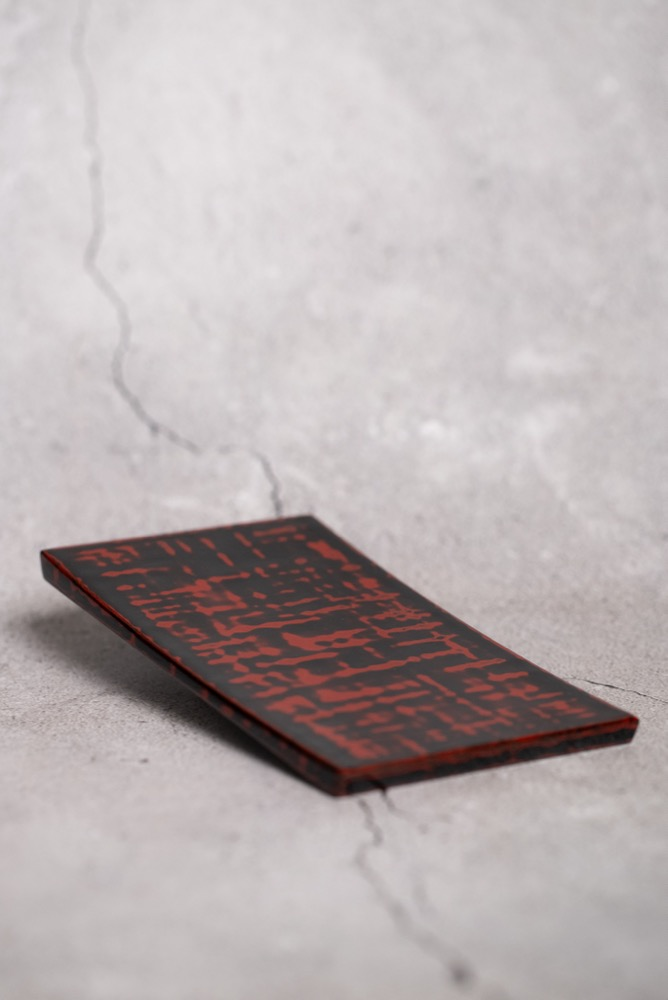
| プラン | 定価 | 割引 | 支援価格（送料別） | 限定数 |
|---|---|---|---|---|
| Early Bird | ¥20,000 | 30%OFF | ¥14,000 | 8 |
| KS Special | ¥20,000 | 20%OFF | ¥16,000 | 12 |
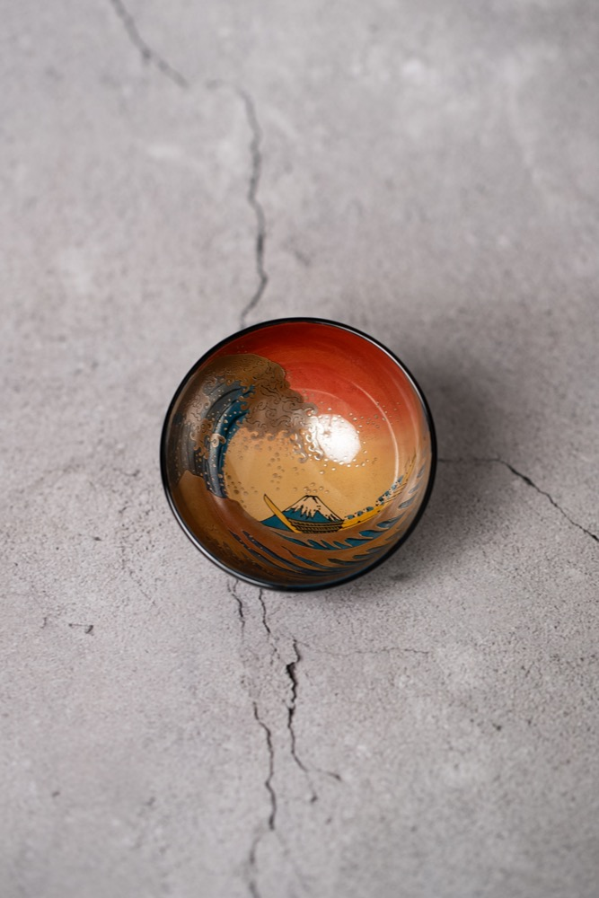
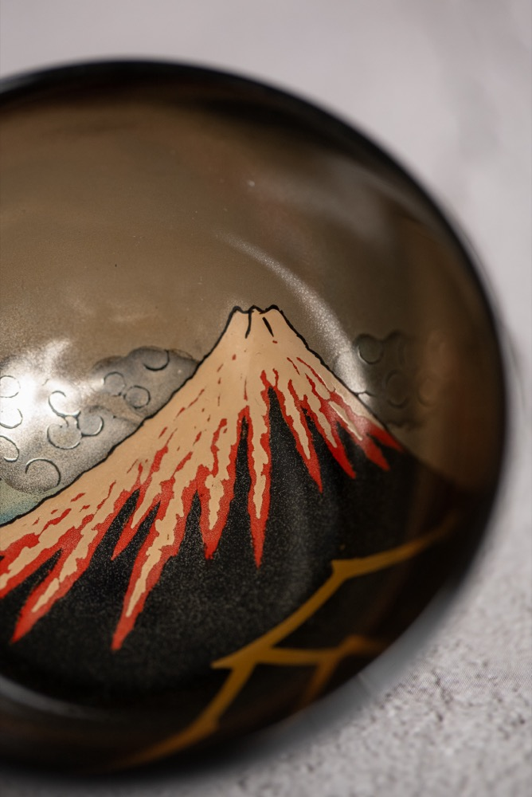
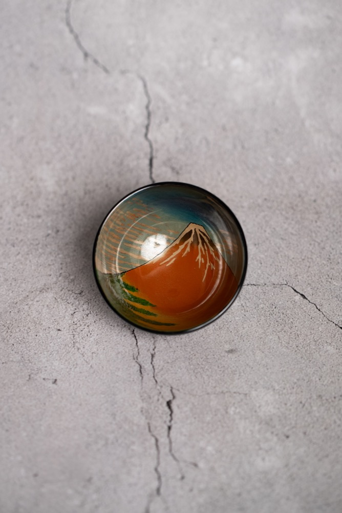
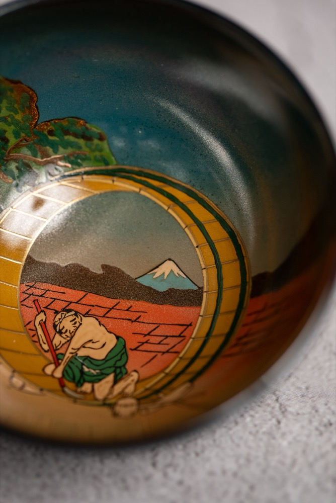
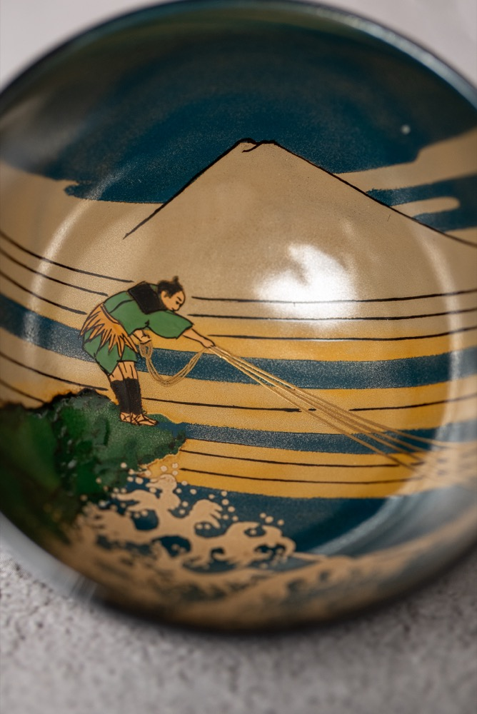
図柄ごとの英語紹介（5種）：
| プラン | 定価 | 割引 | 支援価格（送料別） | 限定数 |
|---|---|---|---|---|
| Early Bird | ¥170,000 | 30%OFF | ¥119,000 | 各図柄2 |
| KS Special | ¥170,000 | 20%OFF | ¥136,000 | 各図柄3 |
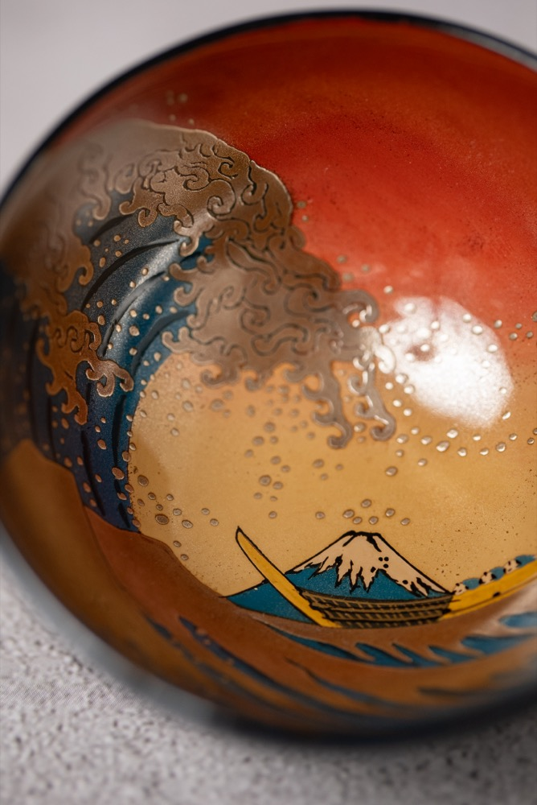
| プラン | 定価 | 割引 | 支援価格（送料別） | 限定数 |
|---|---|---|---|---|
| Early Bird | ¥850,000 | 35%OFF | ¥552,500 | 2 |
| KS Special | ¥850,000 | 25%OFF | ¥637,500 | 3 |
| 商品 | 支援価格（送料別） | 商品 | 支援価格（送料別） |
|---|---|---|---|
| 飯椀（大） | ¥32,000 | NEGORO角皿 | ¥16,000 |
| ラーメン鉢 | ¥66,400 | 浮世絵ぐい呑（図柄指定） | ¥136,000 |
| ストレートカップ | ¥24,000 | 浮世絵ぐい呑 フルセット | ¥637,500 |
| 6寸丸皿 | ¥17,600 |